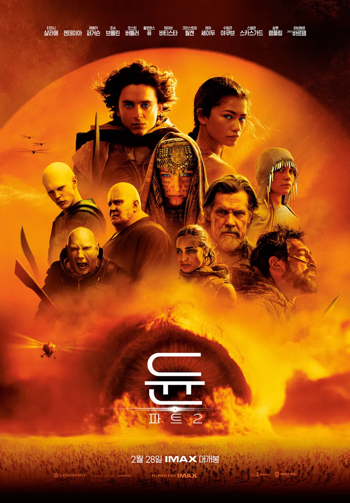

듄(2021)
SUMMARY
Movie Summary
10191년, 아트레이데스 가문의 후계자인 폴(티모시 샬라메)은 시공을 초월한 존재이자 전 우주를 구원할 예지된 자의 운명을 타고났다. 그리고 어떤 계시처럼 매일 꿈에서 아라키스 행성에 있는 한 여인을 만난다. 모래언덕을 뜻하는 '듄'이라 불리는 아라키스는 물 한 방울 없는 사막이지만 우주에서 가장 비싼 물질인 신성한 환각제 스파이스의 유일한 생산지로 이를 차지하기 위한 전쟁이 치열하다. 황제의 명령으로 폴과 아트레이데스 가문은 죽음이 기다리는 아라키스로 향하는데… 위대한 자는 부름에 응답한다, 두려움에 맞서라, 이것은 위대한 시작이다!
Reason for movie recommendation
영화 '듄'은 여러 가문들이 등장하여 잘 짜여진 세계관이 존재한다. 웅장한 배경음악으로 인해 몰입도가 상당히 좋으며 압도되는 분위기를 느낄 수 있다. 영상미가 압도적이며 SF영화를 좋아하는 누구든지 만족할 것 같은 영화이다.
- 영상미/연출
- 세계관 구성
- 사운드
후속작 - 듄2(2024)

2024.02.28 개봉
황제의 모략으로 멸문한 가문의 유일한 후계자 폴.(티모시 샬라메) 어머니 레이디 제시카(레베카 퍼거슨)와 간신히 목숨만 부지한 채 사막으로 도망친다. 그곳에서 만난 반란군들과 숨어 지내다 그들과 함께 황제의 모든 것을 파괴할 전투를 준비한다. 한편 반란군들의 기세가 높아질수록 불안해진 황제와 귀족 가문은 잔혹한 암살자 페이드 로타(오스틴 버틀러)를 보내 반란군을 몰살하려 하는데… 운명의 반격이 시작된다!